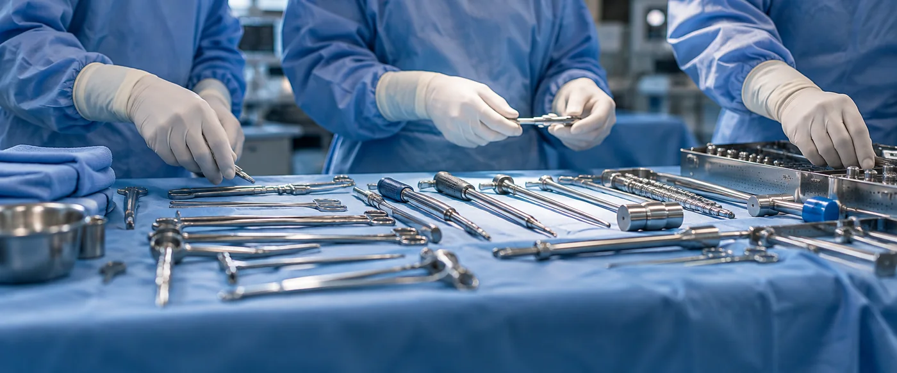
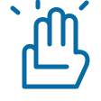
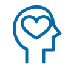
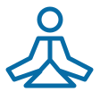
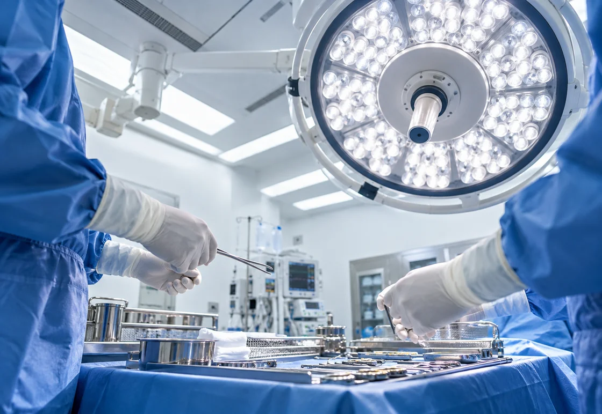
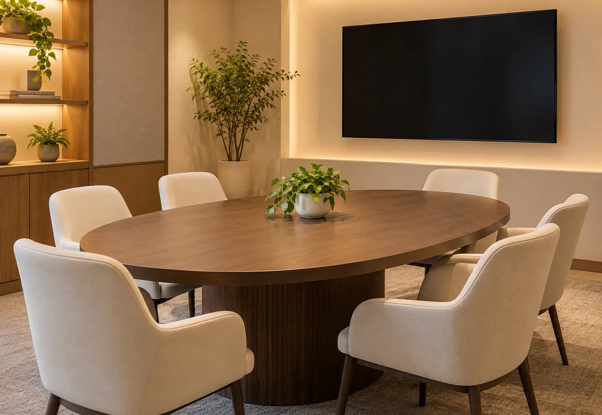
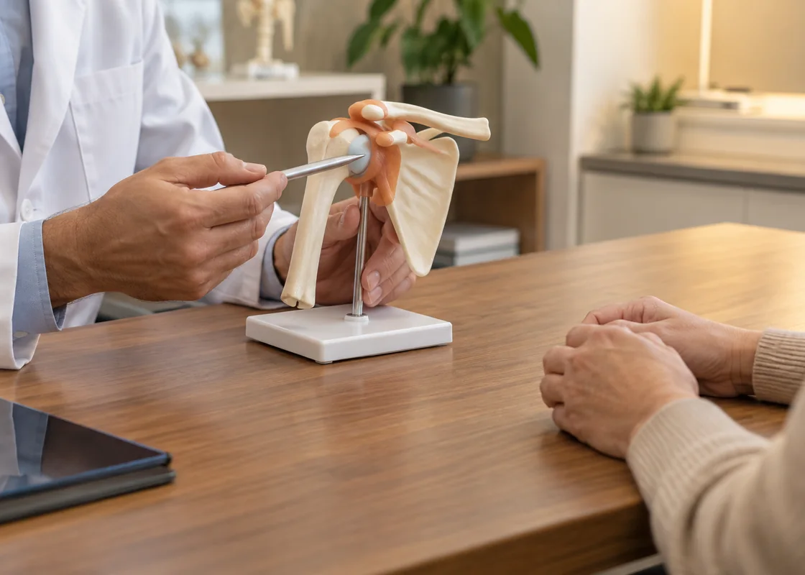
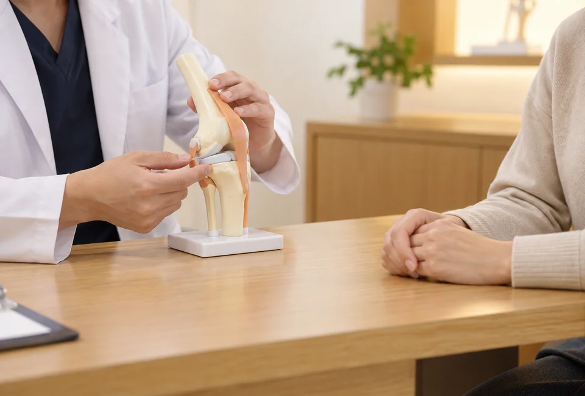
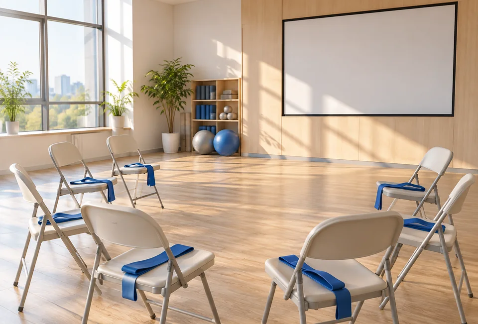

당신이 보는 모든 풍경,
당신이 모든 순간이
아름답게 빛날 수 있도록

우리는 만나는 사람들의
‘통증’에서
그 사람의
‘아픈 마음’을 먼저 생각합니다.
통증으로 고통 받는
모든 이들의 삶이
편안해 지도록
즉각적인 증상치료에서
원인적 치료까지
당신의 삶을
돌려드리겠습니다.
건강을 돌보는 일은 아픈 때에만 필요한 일이 아닙니다.
진료를 시작하기 전부터 치료 뒤의 일상까지 이어지는 과정입니다.
곧은정형외과는 몸의 기능이 회복되는 과정과 더불어
정신적 안녕,
주변 사람들과의 관계, 생활의 목표도 함께 살피는 돌봄을 생각합니다.
환자가 하루를 보내는 방식과 그 안에서 치료가 맡아야 할 역할을
돌아보며 진료와 지원을 연결합니다. 이것이 곧은 케어의 방향입니다.

신체적 회복
정신적 안녕
삶의 의미치료의 결과와 그다음의 생활을 함께 생각하는 곧은정형외과는
진료에서 얻은 배움을 환자의 일상에 도움이 되는 설명과 돌봄으로 연결합니다.
수술을 마친 뒤에도 회복은 이어집니다. 익숙한
산책길과 생활의 동작으로 돌아가는 과정까지 함께 살피겠습니다.

곧은정형외과에게 성공적인 치료란
치료와 재활이 서로 연결되어 생활의 변화를 돕는 과정입니다.
치료를 준비하는 단계에서 몸의 상태와 목표를 확인하고,
재활에서는 움직임과 생활의 불편이 어떻게 달라지는지 살핍니다.
치료와 재활, 그 이후의 생활까지 이어서 생각하겠다는 약속을 바탕으로, 각 단계에서 필요한 설명과 지원을 준비합니다.

과학적 근거에 기반한 치료 설계와
회복 단계와 현재 기능에 맞춘 재활 계획,
그리고
전문성과 배려를 갖춘 다학제 치료팀이
환자의 일상 복귀를
체계적으로 지원합니다.
곧은 회복클리닉은 이러한 재활의 방향에 따라
회복의 속도와 삶의 질을 함께 높이는
치료를 실현합니다.

곧은 본원에서는 수술과 급성기 치료의 필요성을 평가하고, 치료를 준비하는 과정부터 회복 계획까지 설명합니다. 진료 분야가 필요한 정보를 나누며 환자의 현재 상태와 치료 뒤의 생활을 함께 살피는 진료를 지향합니다.

곧은 회복클리닉은 재활과 통증 조절, 만성질환 관리와 나이 듦에 따른 건강 변화를 함께 살핍니다. 진료 뒤에도 필요한 기능을 유지하고 일상의 동작을 편안히 이어 갈 수 있도록 운동과 생활 관리의 계획을 상의합니다.

지역 건강 나눔 활동은 치료비가 부담되는 어르신이 필요한 도움을 찾도록 안내하고, 나이 듦에 따른 건강 변화에 관한 연구와 교육을 함께 살피는 활동입니다. 건강 정보를 이해하고 생활에서 실천할 수 있도록 지역사회와 필요한 자료를 나눕니다.
재활 중심 회복클리닉 운영 시작
제6회 아름다운 노년 심포지엄
운동·물리치료 공간 운영 시작
제5회 아름다운 노년 심포지엄
VIP진료실 초석 개소
제4회 아름다운 노년 심포지엄
재단법인 건강백년 설립
노년의학 연구회 Eternity 설립
올린병동 확장
제3회 아름다운 노년 심포지엄
진료 교육 라운지 운영
SRP Hall 개소
통합건강 진료 공간 운영
고객지원실 개소
통증클리닉 개소
재활센터외래 개소
재활센터 SRP2 개소
YOUTUBE 김도윤TV 시작
재활센터 SRP 개소
개원 기념 옥상 정원 행사
옥상 정원 산책 공간 개방
제2회 아름다운 노년 심포지엄
퇴원 전 환자 중앙공원 소풍
개원 2주년 기념식
곧은 분원 개원
제1회 아름다운 노년 심포지엄
개원기념식
곧은정형외과 본원 진료시작